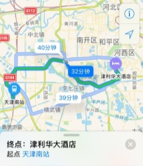
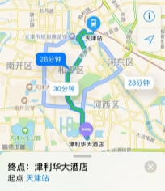
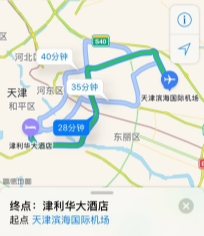

第一届无线传能与能源互联技术论坛
（第二轮通知）
主办单位：中国电子学会（化学与物理电源技术分会）
承办单位：中国电子科技集团第十八研究所
支持单位：中国化学与物理电源行业协会，中国电子科技集团
2017年09月16−18日在天津举办的第一届无线传能与能源互联技术论坛议程已确定，详见如下：
无线传能与能源互联技术论坛议程表
开幕式 主持人：刘兴江 （9月17日，09:00-9:30，津利华大酒店，风华厅） | ||||
报告题目 | 报告人 | 单 位 | 时 间 | |
1 | 大会致辞 | 邀请嘉宾 |
| 09:00~09:15 |
2 | 无线传能与联网 | 会议主办方代表 |
| 09:15~09:30 |
主题1：无线传能技术发展与应用 主持人：冷甦鹏教授，陈卫标研究员 （09:30-12:05，津利华大酒店，风华厅） | ||||
3 | 激光无线传能技术展望 | 陈卫标 副所长 | 中科院上海光机所 | 09:30~09:55 |
4 | 电磁无线传能的效率分析和一些技术设想 | 陈 星 教授 | 四川大学 | 09:55~10:20 |
5 | 近场无线电能传输关键技术研究 | 张 献 副教授 | 天津工业大学 | 10:20~10:45 |
6 | 能源互联网关键技术分析 | 张 涛 教授 | 国防科技大学 | 10:45~11:05 |
7 | 基于数能一体化传输的无线能量互联网关键技术 | 冷甦鹏 教授 | 电子科技大学 | 11:05~11:25 |
8 | 无线充电技术调研报告 | 王建平 总师 | 北京寻北科技发展有限公司 | 11:25~11:45 |
9 | 严酷环境机器人载近场无线能量传输与分布式联网技术体系与应用研究探讨 | 龚海里 研究员 | 中国科学院沈阳自动化研究所 | 11:45~12:05 |
（12:05－13:30午休）
主题2：光学和电磁波无线传能技术 主持人：祖继峰研究员，仲元昌教授 （9月17日，13:30~18:30，津利华大酒店，风华厅） | ||||
报告题目 | 报告人 | 单 位 | 时 间 | |
1 | 微波与激光互补式无线传能关键技术研究 | 仲元昌 教授 | 重庆大学 | 13:30~13:50 |
2 | 电磁波无线传能技术的研究进展及发展趋势分析 | 林先其 教授 | 电子科技大学 | 13:50~14:10 |
3 | 无线输能在临近空间浮空器中的应用 | 徐国宁 副研究员 | 中科院光电研究院 | 14:10~14:30 |
4 | 高效快速远程光电/太阳能纳米充电器件和系统技术的研究 | 石 元 研究员 | 中科院西安光机所瞬态光学研究室 | 14:30~14:50 |
5 | 激光定向传能的光束特性思考 | 储修祥 教授 许晓军 研究员 | 浙江农林大学理学院，国防科技大学光电科学与工程学院 | 14:50~15:10 |
6 | 无线激光传能应用的高效光束控制技术 | 汪相如 教授 | 电子科技大学 | 15:10~15:30 |
7 | 激光传能技术在航天器中应用及研究进展 | 孟祥翔 高工 | 山东航天电子技术研究所 | 15:30~15:50 |
8 | 无线能量传输技术研究及应用 | 杨世春 教授 | 北京航空航天大学 | 15:50~16:10 |
9 | 高效毫米波整流天线和阵列研究 | 杨雪霞 教授 | 上海大学 | 16:10~16:30 |
10 | GaAs多结激光光伏电池研究 | 赵勇明 副研究员 | 中国科学院苏州纳米技术与纳米仿生研究所 | 16:30~16:50 |
11 | 808nm激光辐照下GaAs及Si电池的响应特性研究 | 吴凌远 助理研究员 | 中国工程物理研究院流体物理研究所 | 16:50~17:10 |
12 | 无人机激光无线能量传输系统 | 吴世臣 高级工程师 | 山东航天电子技术研究所 | 17:10~17:30 |
13 | 用于微波输能的高效率高功率真空器件 | 黎深根 研究员 | 中国电子科技集团公司第十二研究所 | 17:30~17:50 |
14 | 高效激光光电转换技术研究 | 高 鹏 研究员 | 中国电子科技集团公司第十八研究所 | 17:50~18:10 |
15 | 对飞行无人机的无线激光充电实验及分析 | 武汉大学电子信息学院激光通信实验室 | 18:10~18:30 | |
主题3：近场无线传能技术 （9月18日，09:00~11:00；津利华大酒店，风华厅） 主持人：黄显教授，刘治钢高工 | ||||
报告题目 | 报告人 | 单 位 | 时 间 | |
1 | 空间近场无线传能及能源互联关键技术 | 刘治钢 高级工程师 | 北京空间飞行器设计总部 | 08:30~08:55 |
2 | 基于柔性可延展电子器件的人体表皮无线能量传递技术 | 黄 显 教授 | 天津大学 | 08:55~09:20 |
3 | 超低功率高效率超高频无线能量收集电路设计 | 文光俊 教授 | 电子科技大学 | 09:20~09:40 |
4 | 基于DD型线圈列的动态无线供电系统效率优化研究 | 麦瑞坤 副教授 | 西南交通大学电气工程学院 | 09:40~10:00 |
5 | 激光无线传能中的大气传输问题 | 乔春红 研究员 | 中科院合肥物质科学研究院 | 10:00~10:20 |
6 | 无线电能传输技术在空间科学的应用 | 张善从 研究员 | 中科院空间应用工程与技术中心 | 10:20~10:40 |
7 | 大功率无线充电系统开发及应用 | 李晓伟 高级工程师 | 中惠创智无线供电技术有限公司 | 10:40~11:00 |
8 | 航天器无线配电关键技术 | 张龙龙 高级工程师 | 山东航天电子技术研究所 | 候补报告（报名时间排序） |
9 | 基于临近空间飞行器的微波输能复合供电技术研究 | 苏 润 高工、主任 | 中国电子科技集团公司第三十八研究所 | 候补报告 |
10 | 无线充电-从芯片到电动汽车的发展与应用 | 沙锦明 总工 林桂江 博士 | 厦门新页科技有限公司 | 候补报告 |
论坛 主题：能量信息共传与能源联网，军民融合发展 （9月18日，11:05－11:55，津利华大酒店，风华厅） 嘉宾：邓中亮，张涛，。。。。
| ||||
| 闭幕式 |
|
| 11:55~12:00 |
关于此次论坛的重要提示：
本次论坛不收取会议注册费，但要求提前报名注册（请见附件回执），参会人员住宿及交通费自理。
鉴于天津最近属于旅游旺季，希望参会者尽量自己解决住宿。
会议地点：天津，天津津利华大酒店（天津市河西区友谊路32号）
报名注册联系人：明 海 15910290718, lunaticmh@163.com；
附件1（若报名参会，请将此回执填好后发送至邮箱：lunaticmh@163.com）
第一届无线传能与能源互联技术论坛回执
姓名 | 单位 | 职业 | 联系方式 | 到会／离会时间 |
|
|
|
|
|
会议地图如下：
  